Inicio › Otros de tecnología y hogar › Puertos
Otros de tecnología y hogar Puertos en Honduras: precios comparados
50 productos Puertos en 1 tiendas (Sycom). Desde L 215.
 Switch de 8 Puertos TP-Link TL-SG108 Desktop GigabitL 695En Sycom
Switch de 8 Puertos TP-Link TL-SG108 Desktop GigabitL 695En Sycom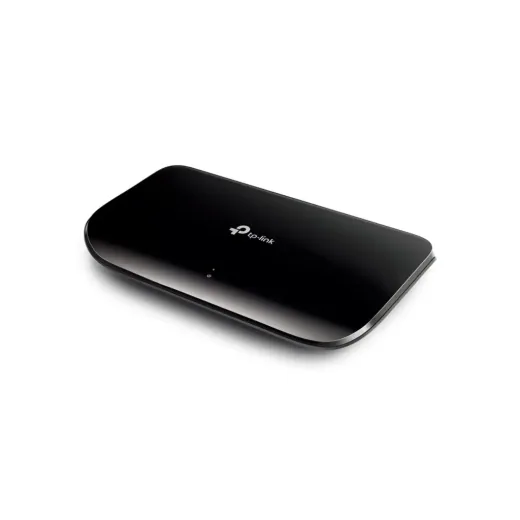
Switch de 8 Puertos TPLINK TL-SG1008D Desktop Gigabit N/DL 720En Sycom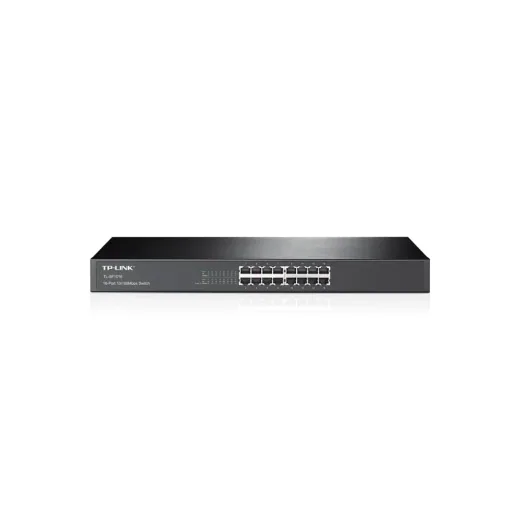
Switch de 16 Puertos TPLINK TL-SF1016 Rackeable 10/100ML 750En Sycom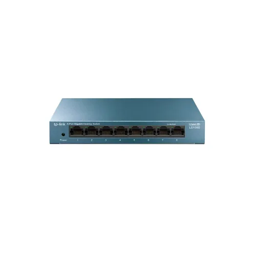
Switch de 8 Puertos TPLINK LS108G 10/100/1000 MbpsL 750En Sycom Switch de 8 Puertos TPLINK LS1008G GigabitL 595En Sycom
Switch de 8 Puertos TPLINK LS1008G GigabitL 595En Sycom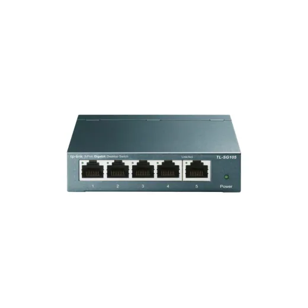
Switch de 5 Puertos Gigabit Easy Smart TPLINK TL-SG105L 850En Sycom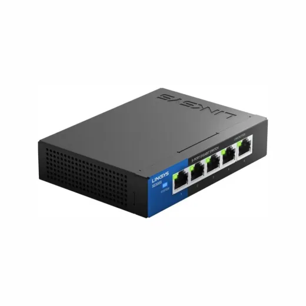
Switch de 5 Puertos 100/1000 Linksys SE3005 DesktopL 900En Sycom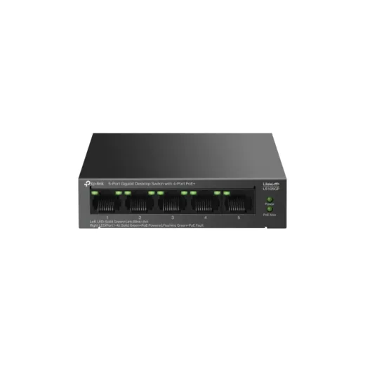
Switch de 5 Puertos TP-Link LS105GP con 5P Poe+ MAX 65WL 950En Sycom Switch de 5 Puertos TPLINK LS1005G GigabitL 420En Sycom
Switch de 5 Puertos TPLINK LS1005G GigabitL 420En Sycom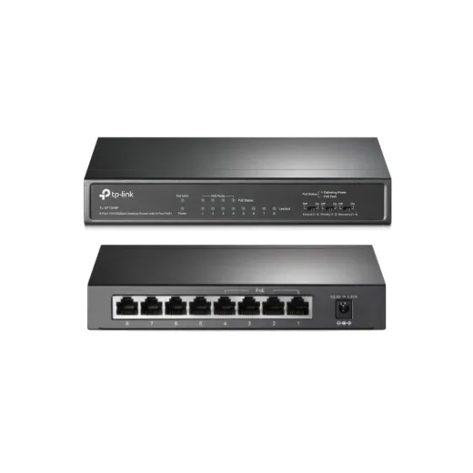
Switch de 8 Puertos TPLINK TL-SF1008P 4 puertos POE + 4 10/100 DesktopL 1,195En Sycom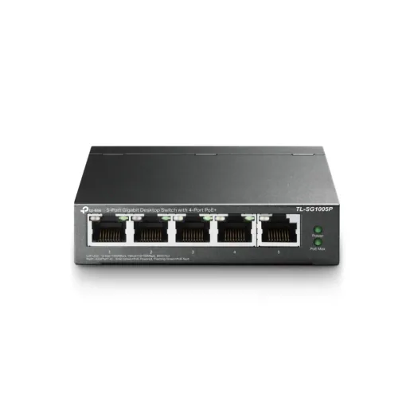
Switch de 5 Puertos Gigabit TPLink TL-SG1005P 4 Port POE + 1 NO POEL 1,195En Sycom Switch de 8 Puertos DLink DES-1008C 10/100L 402.5En Sycom
Switch de 8 Puertos DLink DES-1008C 10/100L 402.5En Sycom Switch de 8 Puertos MERCUSYS MS108G 10/100/1000 SobremesaL 375En Sycom
Switch de 8 Puertos MERCUSYS MS108G 10/100/1000 SobremesaL 375En Sycom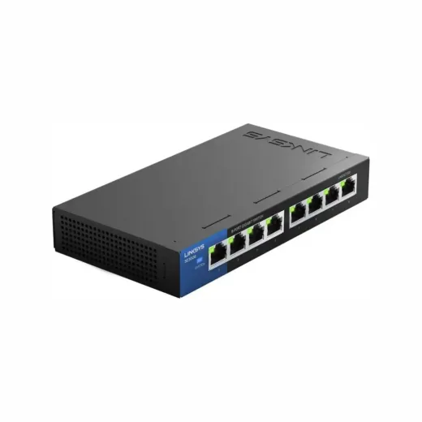
Switch de 8 Puertos 100/1000 Linksys SE3008 DesktopL 1,350En Sycom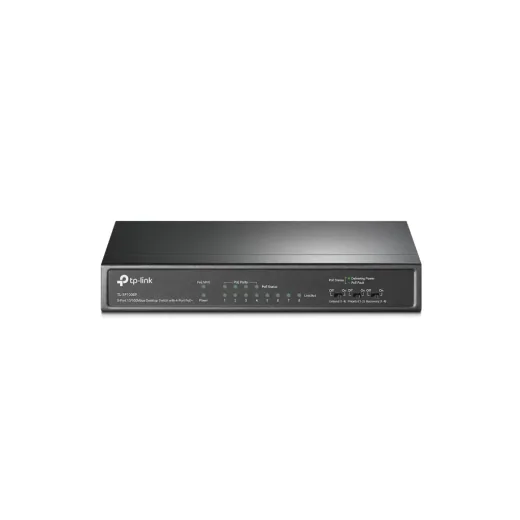
Switch de 8 Puertos Gigabit TPLINK TL-SG1008P 4 Port POE + 4 NO POEL 1,450En Sycom Switch de 8 Puertos TPLINK LS1008 10/100 MbpsL 320En Sycom
Switch de 8 Puertos TPLINK LS1008 10/100 MbpsL 320En Sycom Switch de 24 Puertos TPLINK TL-SF1024D Rackeable/Desktop 10/100ML 1,595En Sycom
Switch de 24 Puertos TPLINK TL-SF1024D Rackeable/Desktop 10/100ML 1,595En Sycom Switch de 8 Puertos Gigabit Easy Smart TPLINK TL-SG108PE 4 Port POE + 4 NO POEL 1,595En Sycom
Switch de 8 Puertos Gigabit Easy Smart TPLINK TL-SG108PE 4 Port POE + 4 NO POEL 1,595En Sycom Switch de 16 Puertos Gigabit MERCUSYS MS116GS NegroL 1,610En Sycom
Switch de 16 Puertos Gigabit MERCUSYS MS116GS NegroL 1,610En Sycom Switch de 5 Puertos TPLINK TL-SF1005D 10/100 Mbps N/DL 295En Sycom
Switch de 5 Puertos TPLINK TL-SF1005D 10/100 Mbps N/DL 295En Sycom Switch de 5 Puertos TPLINK LS1005 10/100MbpsL 260En Sycom
Switch de 5 Puertos TPLINK LS1005 10/100MbpsL 260En Sycom Switch de 16 Puertos Netgear GS316-100NAS GigabitL 1,995En Sycom
Switch de 16 Puertos Netgear GS316-100NAS GigabitL 1,995En Sycom Switch de 5 Puertos Linksys LGS105P 5 Puertos POE Gigabit Desktop LGS105P-NAL 1,995En Sycom
Switch de 5 Puertos Linksys LGS105P 5 Puertos POE Gigabit Desktop LGS105P-NAL 1,995En Sycom Switch de 16 Puertos TP-Link GIGABIT TL-SG116L 2,150.01En Sycom
Switch de 16 Puertos TP-Link GIGABIT TL-SG116L 2,150.01En Sycom Switch de 8 Puertos Gigabit Smart TPLINK OMADA JetStream TL-SG2008L 2,150.01En Sycom
Switch de 8 Puertos Gigabit Smart TPLINK OMADA JetStream TL-SG2008L 2,150.01En Sycom Switch de 16 Puertos TPLINK TL-SG1016D DESKTOP GigabitL 2,185En Sycom
Switch de 16 Puertos TPLINK TL-SG1016D DESKTOP GigabitL 2,185En Sycom Switch de 8 Puertos Cudy FS108D 10/100 DesktopL 215En Sycom
Switch de 8 Puertos Cudy FS108D 10/100 DesktopL 215En Sycom Switch de 10 Puertos TPLINK TL-SG1210P Gigabit 8x POE Total Max 63WL 2,300En Sycom
Switch de 10 Puertos TPLINK TL-SG1210P Gigabit 8x POE Total Max 63WL 2,300En Sycom Switch de 8 Puertos TPLINK TL-SG1008MP POE 153Watt Gigabit RackeableL 2,795.01En Sycom
Switch de 8 Puertos TPLINK TL-SG1008MP POE 153Watt Gigabit RackeableL 2,795.01En Sycom Switch de 16 Puertos Linksys LGS116 Gigabit DesktopL 2,895En Sycom
Switch de 16 Puertos Linksys LGS116 Gigabit DesktopL 2,895En Sycom Switch de 8 Puertos Gigabit con 2 SFP+ TPLINK OMADA JetStream TL-SG2210P Rackeable POE 61WL 2,950En Sycom
Switch de 8 Puertos Gigabit con 2 SFP+ TPLINK OMADA JetStream TL-SG2210P Rackeable POE 61WL 2,950En Sycom Switch de 8 Puertos Linksys LGS108P 4 Puertos POE+ y 4P Gigabit DesktopL 2,995En Sycom
Switch de 8 Puertos Linksys LGS108P 4 Puertos POE+ y 4P Gigabit DesktopL 2,995En Sycom Switch de 10 Puertos TPLINK TL-SG1210MP Gigabit 8 x POE 123WL 3,195En Sycom
Switch de 10 Puertos TPLINK TL-SG1210MP Gigabit 8 x POE 123WL 3,195En Sycom Switch de 24 Puertos TPLINK TL-SG1024 Rackeable GigabitL 3,200En Sycom
Switch de 24 Puertos TPLINK TL-SG1024 Rackeable GigabitL 3,200En Sycom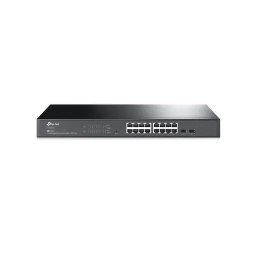
Switch de 16 Puertos Gigabit Smart con 2 SFP Slots TPLINK Jetstream SG2218L 3,895En Sycom Switch de 10 Puertos Gigabit Smart con 8 Puertos POE+ 2SFP Max 150W TPLINK Jetstream TL-SG2210MPL 4,250En Sycom
Switch de 10 Puertos Gigabit Smart con 8 Puertos POE+ 2SFP Max 150W TPLINK Jetstream TL-SG2210MPL 4,250En Sycom Switch de 16 Puertos 10/100 POE + 2Gibabit Max 30W TPLINK TL-SL1218PL 4,600En Sycom
Switch de 16 Puertos 10/100 POE + 2Gibabit Max 30W TPLINK TL-SL1218PL 4,600En Sycom Switch de 16 Puertos 10/100 POE+ Max 250W TPLINK Jetstream TL-SL1218MPL 4,995En Sycom
Switch de 16 Puertos 10/100 POE+ Max 250W TPLINK Jetstream TL-SL1218MPL 4,995En Sycom Switch de 24 Puertos 10/100 POE+ Max 250W + 2 SFP TPLINK TL-SL1226PL 5,495En Sycom
Switch de 24 Puertos 10/100 POE+ Max 250W + 2 SFP TPLINK TL-SL1226PL 5,495En Sycom Switch de 16 Puertos Linksys LGS116P 8POE Gigabit Desktop PoE+L 5,500En Sycom
Switch de 16 Puertos Linksys LGS116P 8POE Gigabit Desktop PoE+L 5,500En Sycom Switch de 24 Puertos Gigabit L2+ Administrable con 4 SFP Slots TPLINK JETSTREAM TL-SG3428L 5,795En Sycom
Switch de 24 Puertos Gigabit L2+ Administrable con 4 SFP Slots TPLINK JETSTREAM TL-SG3428L 5,795En Sycom Switch de 16 Puertos Gigabit POE + 2 SFP TPLINK OMADA JetStream TL-SG2218P Rackeable POE 150WL 5,895En Sycom
Switch de 16 Puertos Gigabit POE + 2 SFP TPLINK OMADA JetStream TL-SG2218P Rackeable POE 150WL 5,895En Sycom Switch de 18 Puertos Gigabit Smart con 16 Puertos POE+ 2SFP Max 250W +SFP SLOT TPLINK TL-SG1218MPEL 6,200En Sycom
Switch de 18 Puertos Gigabit Smart con 16 Puertos POE+ 2SFP Max 250W +SFP SLOT TPLINK TL-SG1218MPEL 6,200En Sycom Switch de 24 Puertos Linksys LGS124P Gigabit POE 120W RackeableL 6,495En Sycom
Switch de 24 Puertos Linksys LGS124P Gigabit POE 120W RackeableL 6,495En Sycom Switch de 24 Puertos Gigabit L2+ Administrable con 4 10GE SFP+ Slots TPLINK OMADA TL-SG3428X RackeableL 7,500En Sycom
Switch de 24 Puertos Gigabit L2+ Administrable con 4 10GE SFP+ Slots TPLINK OMADA TL-SG3428X RackeableL 7,500En Sycom Switch de 24 Puertos L3 Cudy GS5024S4 100/1000 Gigabit + 4 Gigabit SFP Ports + 1Console Port 1U Rack MountL 8,200.01En Sycom
Switch de 24 Puertos L3 Cudy GS5024S4 100/1000 Gigabit + 4 Gigabit SFP Ports + 1Console Port 1U Rack MountL 8,200.01En Sycom Switch de 8 Puertos 2.5G L2+ Administrable con 8 puertos 2.5GBASE-T PoE+ (240w)y 2 puertos 10GE SFP+ TPLINK OMADA SG3210XHP-M2 RackeableL 11,500En Sycom
Switch de 8 Puertos 2.5G L2+ Administrable con 8 puertos 2.5GBASE-T PoE+ (240w)y 2 puertos 10GE SFP+ TPLINK OMADA SG3210XHP-M2 RackeableL 11,500En Sycom Switch de 24 Puertos Linksys LGS328C Gigabit Rackeable SFPL 13,500En Sycom
Switch de 24 Puertos Linksys LGS328C Gigabit Rackeable SFPL 13,500En Sycom Switch de 48 Puertos L3 Cudy GS5048S4 100/1000 Gigabit + 4 Gigabit SFP Ports + 1Console RJ45L 13,800En Sycom
Switch de 48 Puertos L3 Cudy GS5048S4 100/1000 Gigabit + 4 Gigabit SFP Ports + 1Console RJ45L 13,800En Sycom Switch de 24 Puertos Linksys LGS328MPC Gigabit PoE+ 410w 4 SFPSFP+ 10 Gbps RackeableL 18,400En Sycom
Switch de 24 Puertos Linksys LGS328MPC Gigabit PoE+ 410w 4 SFPSFP+ 10 Gbps RackeableL 18,400En Sycom
Preguntas frecuentes
¿Dónde están más baratos los otros de tecnología y hogar Puertos en Honduras?
Revisa cada producto: mostramos el precio en cada tienda.